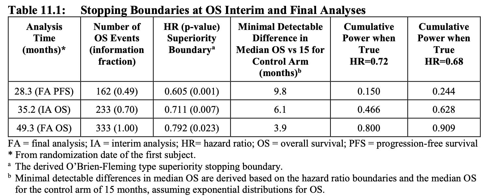
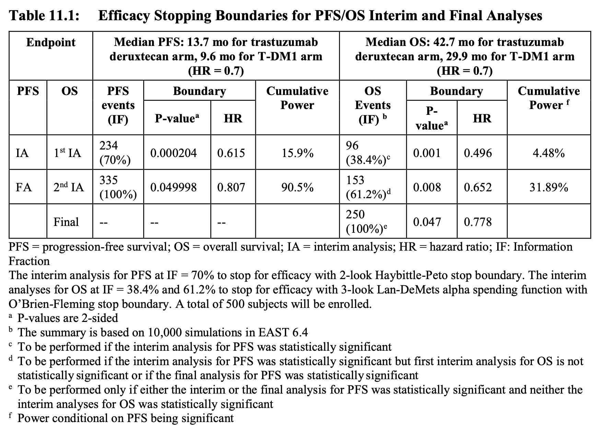
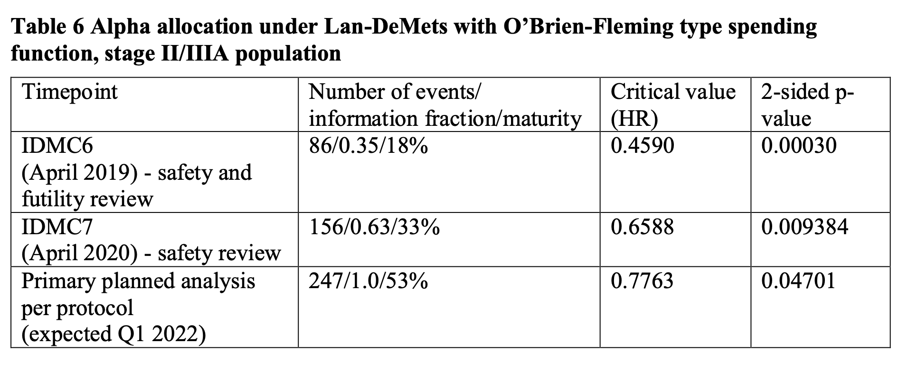

Created: 2022-09-10 Sat 19:43
"This interim analysis will use the O’Brien-Fleming approach with information fraction 0.77 and overall type-I error controlled at 0.05, with an alpha spending at the interim analysis of 0.021, and an alpha spending at the final analysis (when all 108 patients complete the study) of 0.043"
| Number of Interim Analysis | Type I error (for \(\alpha = 0.05\)) |
|---|---|
| 1 | 0.083 |
| 2 | 0.107 |
| 3 | 0.126 |
| 10 | 0.193 |
Stage levels (one-sided) : 0.0002592, 0.0070554, 0.0225331
| Analysis | Probability | |
|---|---|---|
| Interim 1 | Reject \(H_0\) at IA1 | 0.0002592 |
| Interim 2 | Reject \(H_0\) at IA2 | 0.0070554 |
| Not reject \(H_0\) at IA1 but reject \(H_0\) at IA2 | 0.0071601 - 0.0002592 | |
| Final | Reject \(H_0\) at FA | 0.0225331 |
| Not reject \(H_0\) at IA1-2 but reject \(H_0\) at FA | 0.025 - 0.0071601 |


